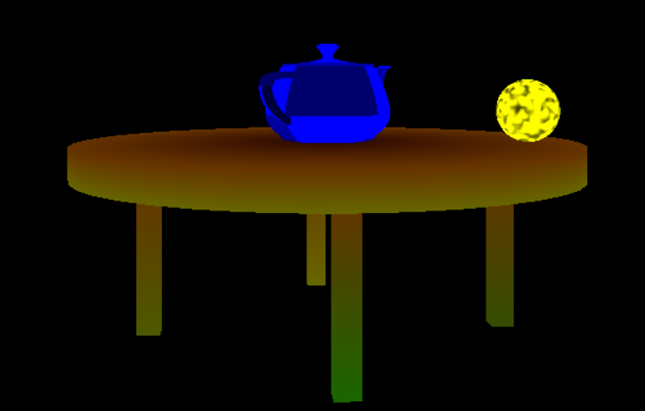

|
IA725 - Rafael Galo 0.2
Trabalho de IA725
|
|
IA725 - Rafael Galo 0.2
Trabalho de IA725
|
O codigo fonte deve ser compilado com o Visual Studio, basta abrir o arquivo ComputacaoGrafica.sln e clicar em Local Windows Debugger.
Estou tentando compilar no meu raspberry pi com linux mas nao quer funcionar.
Ele ira renderizar o icosaedro, a mesa e o bule de utah ao mesmo tempo.
Codigo fonte: https://github.com/rgalo-coder/ComputacaoGrafica
Documentacao: https://rgalo-coder.github.io/IA725/

Feita com 5 cilindros, sendo 4 para cada perna e 1 para o tampao da mesa, existe uma classe cilindro que gera os vertices para um determinado numero de triangulos em cada base
Inicia com vertices pre definidos que geram icosaedro de raio 1. Os lados sao entao subdividos e cada triangulo gera outros 4. Isso é repetido até o grau de divisao desejado. Os pontos criados sao normalizados para modulo 1, sendo assim o icosaedro tende a uma esfera
E feito com 306 vertices e 36 patches de 16 vertices cada. Alguns vertices sao repetidos portanto utilizam-se indices. Uma vez que a malha e renderizada cada 4 pontos vizinhos sao unidos por dois triangulos.